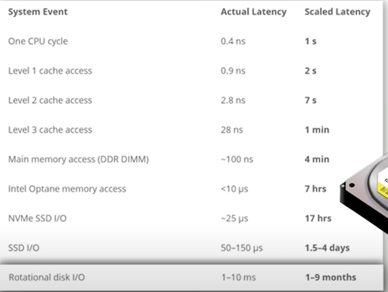
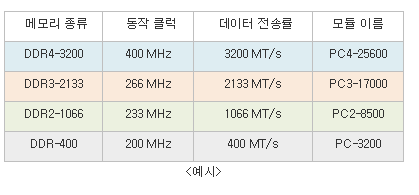
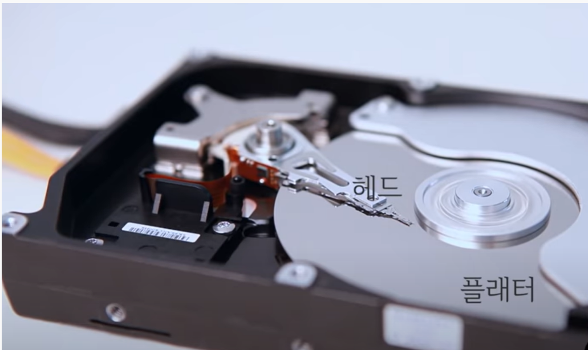
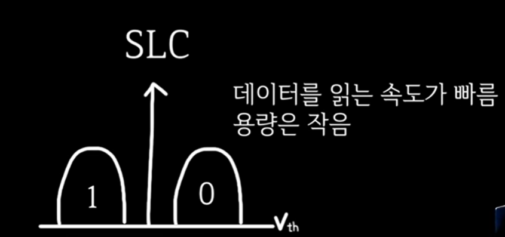
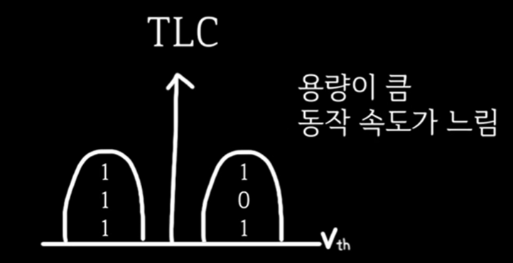

가천전자 |
컴퓨터 본체의 견적을 짜야 하는데 처음이기 때문에 뭐가 뭔지 하나도 모르는 분들을 위해 필요에 맞는 컴퓨터를 맞추기 위한 컴퓨터 본체의 구성과 구성 요소들의 봐야할 점을 알려주는 페이지입니다.
중앙 처리 장치 -> 프로그램의 명령어를 해석하여 데이터를 연산/처리를 하고 그렇게 돌아가도록 제어해주는 부분, 혹은 그 기능을 내장한 칩을 의미한다.
: 한번의 진동에 하나의 비트를 연산한다. 그렇기에 4GHz라고 하면은 1초당 40억번 정도의 진동을 하며 연산을 한다고 생각하면 된다. 그러므로 높을수록 좋다. IPC는 단순히 한번의 진동에 n개의 비트를 연산한다고 보면 된다.
: 2004년부터 싱글코어의 성능이 너무 높아져서 열이 많이 발생하게 되어 녹게 되자, 듀얼코어가 발명이 되었다. 즉, 멀티코어 프로세서가 된 것. 코어는 간단히 예시를 들자면 하나의 사람으로, 하나의 작업을 할 수가 있다. 이것도 지금에 와서는 듀얼코어가 최적화가 되었기에 높을수록 좋다.
: 2002년에 인텔에서 Hyper-Threading Technology를 발표하였고 이것으로 하나의 코어에 2개의 쓰레드가 장착이 될 수 있어졌다. 쓰레드는 간단히 얘기해서 요리사의 가스레인지의 개수로 기능을 분리하여 마치 하나의 코어가 두 개의 코어같이 동시에 2개의 일을 하는 것같은 효능을 얻을 수 있다. 이것 또한 많으면 좋다.
: CPU를 어떻게 설계하였는가로 INTEL과 RYZEN으로 나뉘고 시즌으로도 나뉜다.
: 여기에 대한 설명은 메모리쪽에 링크를 걸도록 하겠다. 참고로 이것도 높으면 좋다.
: 외장그래픽을 살 생각이라면 없는 쪽을 사는게 돈을 아낄 수가 있다. intel은 내장그래픽이 없는 cpu 명에 f가 붙여져있으며 ryzen은 내장그래픽이 없는 cpu 명에 X가 붙여져 있다.
1970년도까지는 cpu혼자서 컴퓨터의 일들을 다 처리해 나갔으나 마우스,모니터의 그래픽이 등장하면서 cpu가 제 성능을 잘 발휘하지 못하게 되었다. 그래서 cpu는 복잡한 일들을 수행하게끔 하기위해서 간단하고 쉬운 일들을 처리해주는 장비가 만들어지고 그 쉬운일들이 대부분 그래픽쪽이었기에 GPU라고 이름 붙여졌다. CPU는 적지만 성능좋은 코어로 복잡한 일들을 하였고 GPU는 많으면서 성능은 중간인 코어로 여러개의 코어가 나뉘어져서 하나씩 계산한 뒤에 합치면은 해결되는 연산들(Matrix,Vector연산)위주로 하였던 것.
내장 그래픽은 CPU안에 탑재되어있는 그래픽으로서 성능이 사무용인 웹서핑,유튜브 정도의 가벼운 그래픽적인 일이 가능하며 게임은 최대 롤정도를 돌릴 수 있다 생각하면 편하다.
외장그래픽은 말 그대로 cpu밖에 메인보드에 장착되어 있는 그래픽카드를 얘기하는 것으로 우리가 흔히 말하는 그래픽 카드가 외장그래픽을 얘기하는 것이다.
NVIDIA와 AMD(인텔도 2022년도에 외장그래픽 카드를 출시했지만 아직 유명하지는 않다.)로 나뉘는데, 성능으로 치면은 NVIDIA이고 가성비로 치면은 AMD라고 할 수 있지만 AMD의 그래픽카드는 드라이버를 직접 만져줘야 하기 때문에 초보자 분들은 무조건 NVIDIA를 사는게 맞아서 사실상 초보는 볼 필요가 없다....
: 한번의 진동에 하나의 비트를 연산한다. 그렇기에 4GHz라고 하면은 1초당 40억번 정도의 진동을 하며 연산을 한다고 생각하면 된다. 그러므로 높을수록 좋다.
: 전자기기이기에 발생하며 정리된 자료를 찾고 싶으면은 유튜브 ‘신성조’ 채널에 잘 정리되어 있다. 당연히 낮고 소음이 낮은게 좋겠지만 가격은 비쌀때가 많으므로 예산에 따라 최소한을 생각해야한다.성능이 좋아질수록 고주파 문제가 발생하고 있다. 귀뚜라미가 우는 것 같은 소리가 난다.
: 핀이 많을수록 전원을 많고 안전하게 공급할 수 있기 때문에 수명이 길다. 마찬가지로 전원부도 총A가 많을수록 전원을 많고 안전하게 공급할 수 있기 때문에 수명이 길다.
: 나중에 파워를 맞출 때 고려할 상황이 되며 전기세에 직접적으로 영향을 준다. 그래픽카드가 컴퓨터 전력의 절반을 먹는다고 생각하면 편하다.
: 케이스에 끼울 때 고려되는 사항이므로 케이스를 맞출 때 생각해두어야 한다.
: 버전 숫자는 높을수록 좋으면 ti가 더 좋다.(이거에 따라 프로세스가 달라진다.) ex) 3070>3060ti>3060
: 소재에 따라 온도에 영향을 주기 때문에 고려하도록 하자. 열전도가 좋은 메탈 소재가 좋을 것이다.
: 2~3개인데,많으면 좋겠지만 성능에 그렇게 영향을 미치지 않으며 3개일 경우에 가로길이가 길어져서 케이스의 선택범위가 줄어들고 비싸질 수 있다.
: 사용자가 자유롭게 내용을 읽고 쓰고 지울 수 있는 기억장치 하드디스크와는 다르게 n번째에 저장된 데이터를 1번째부터 찾아나가야 하는게 아니라 그냥 바로 접근할 수 있기 때문에 압도적으로 빠르다.
단기 기억 장치가 필요한 이유는 아래 사진으로 알 수 있다.
cpu입장에서는 cycle한번으로 부른 것을 1초라 하면은 단기 기억 장치인 램은 4분이 걸리고 장기 기억장치인 ssd는 17시간이 걸리고 hdd는 9개월이 걸린다. 즉 cpu입장에서는 ssd와 hdd와 직접적으로 거래를 하기에는 부족하다. 그래서 램이 등장하고 필요로 된 것이다.
: CPU와 RAM 사이에 캐시 메모리를 별도로 두어서 RAM의 데이터를 직접 접근하는 것보다는 빠르게 접근할 수 있도록 하는 메모리가 캐시메모리이다. 물론 많으면 좋다. 작고 매우 빠르지만 그만큼 매우 비싸다.
램과 캐시메모리에 저장되는 데이터들은 두가지의 지역성으로 판단되어 올려놓는데
-최근 접근된 데이터가 가까운 미래에 접근될 확률이 높다
-최근 접근된 데이터의 주변 데이터도 가까운 미래에 접근될 확률이 높다.
: GB가 높을수록 좋다. 그리고 듀얼채널로 하는게 좋은데 예를 들면 16GB 하나를 장착하는게 아닌 8GB 2개를 장착하는게 좋은 것이다.
: 거의 비슷하고 광고에 자주 표기된다. 읽기 속도는 불러오는 속도이고 쓰기 속도는 저장하는 속도라 생각하면 된다.
: 메모리에 저장된 정보를 찾는데 걸리는 시간으로 역시 작을수록 좋다.
: 노트북용과 PC용은 구분하도록 하자.
: 메인보드에 인식가능한 종류가 다르기 때문에 확인하도록 하자. 최근에는 PC5가 나왔다. 높을수록 좋지만 열이 많이 발생한다.
: 비휘발성, 순차접근이 가능한 컴퓨터의 보조 기억장치이다. 파일을 읽거나 쓸 때 헤드라 하는 것이 회전하고 있는 플래터 부분의 자성을 읽거나 쓰면서 이루어지는데 -> 정교한 물리적인 움직임으로 작동이 된다.
읽고 쓰는 모든 동작이 전자적 방식으로 이루어진다. -> Solid State 라고 보았다.
SSD는 작고 가벼우며 속도도 대략 30배정도의 차이를 보여준다. HDD는 단 한가지인 매우 싸다는 점이 장점으로 왜 지금까지도 쓰이는 가에 대한 대답이기도 하다. 그래서 큰 용량이 필요하지 않다면 그냥 SSD만 구입해놓아도 상관이 없는 부분이며 SSD 자체가 HDD의 단점을 보완하기 위해 나타난 것이라서 바뀌어 나가는 부품들이라고 생각하면 된다.
용량은 클수록 좋다라기보다는 자신의 목적에 맞는 용량을 예산에 맞추어 사는게 맞다.
빠를수록 좋다. 하지만 빠를수록 열이 많이 발생한다고 보면 된다.
HDD면은 케이스에 맞게 사이즈를 봐야하고 SSD라면은 메인보드에서 지원하는 규격을 살펴보아야 한다.보통 노트북의 경우가 크기를 잘 알아봐야 한다.
SDD같은 경우에 초반에 HDD에서 넘어오게끔 하기위해 HDD와 같은 연결방식인 SATA방식의 SSD가 있었고 그게 M.2(SATA)방식으로 그리고 현재 SSD만의 연결방식인 M.2(NVMe)가 많이 나오고 있는 추세이다. 메인보드에서 지원하는 방식을 잘 보아야 한다.
하나의 셀에 하나의 비트를 저장하는 것을 SLC
하나의 셀에 두 개의 비트를 저장하는 것을 MLC
3개면은 TLC,4개면은 QLC이다. 요즘은 대부분 TLC를 쓰는 것 같다.
 컴퓨터에는 CPU, 파워 서플라이, DRAM, 그래픽 카드, SSD, HDD 등 수많은 부속 제품들이 들어 있다. 그런데 이런 부품들이 서로 따로 놀 수는 없는 노릇이라, 각 부품들을 하나로 연결해주는 회로와 밖으로 신호를 보낼 수 있는 출력 포트를 가지고 있는 부품이 필요한데, 이 기능들을 가지고 있는 부품이 바로 메인보드이다.
cpu에 따라 적용될 소켓이 다르니까 꼭 확인하자.
전원부는 전력 공급 단자 -> CPU, 메인 메모리, I/O 등의 기타 칩셋들로 효율적이면서 안전하게 전달해주는 매우 중요한 과정이다. 따라서 전원부의 품질이 최우선시 되어야 할 정도로 중요한 스펙이다.
램의 모듈중에 뭘 지원하는지를 살펴봐야한다. 성능좋은 램을 샀지만 메인보드에는 낄 수 없는 불상사를 방지하도록 하자.
N채널 모스펫
DR.MOS 모스펫 : 좋음. N채널의 2배 효율 ->
말그대로 WIFI로 인터넷 연결을 할 것이라면 여부를 확인해 두어야 한다.
메인보드 후면에는 키보드, 마우스, USB, 오디오 단자 등이 붙어 있다.이런 단자들 중에 내가 쓸 외부기기에 쓰일 단자들 버전이 맞는지 확인해봐야한다.
방열판의 크기를 잘 확인하도록 하자. 컴퓨터 같은 전자제품에 있어서 중요한 점은 역기 온도와 관련된 것이니까 말이다.
컴퓨터에 장착되는 컴퓨터 쿨러들 중 CPU를 냉각하기 위해 설치하는 쿨러이다.
공랭 쿨러는 CPU를 공기를 이용하여 냉각하는 방식의 쿨러이다. CPU의 열을 직접적으로 혹은 히트 파이프를 통해 방열판(히트싱크)로 전달하고 팬을 통해 차가운 공기를 방열판에 통과시켜 바로 대기중으로 열을 배출하는 방식이다.
가격, 크기 대비 냉각 성능이 수랭 방식보다는 대개 낮은 편이다. 그러나 수랭방식이 가지고 있는 누수, 펌프 고장 등의 안정성 문제를 신경쓸 필요가 없다는 장점이 있다.
수냉 쿨러는 냉매(Brine)가 펌프에 의해 강제로 순환되는 구조를 포함하는 쿨러를 지칭한다. 성능적으로 얘기하자면 intel의 i7부터는 수냉쿨러를 장착해야 된다고 생각하면 된다.
수랭 방식은 열용량이 높은 액체 냉매를 강제적으로 순환시키기 때문에 CPU-히트싱크 간 열전달 능력과 열용량이 공랭 방식과는 비교도 안 될 정도로 높다. 또한, 냉각핀의 밀도도 훨씬 높아 크기 대비 방열면적은 일반적인 공랭 쿨러 대비 훨씬 높다. 따라서, 동일한 체급 대비 공랭방식보다 높은 냉각 성능을 내며, 순간적인 발열 상승에도 온도 유지력이 뛰어나다.
수랭 쿨러는 2~3년 정도 사용되었을 때 펌프 노후화나 고장으로 인해 성능 저하[20] 문제가 고질적으로 일어나며, 심각한 경우 냉각수가 흘러나와 부품 침수 문제를 일으키는 치명적인 단점이 있다.
말그대로 컴퓨터의 전력공급원
보통 그래픽카드의 권장 파워용량 정도면은 잘 돌아간다. 물론 권장보다 100W정도 더 넣어주면은 안전하고 좋다. 파워 용량은 최대치 용량이기 때문에 700W라고 해서 계속 700W공급이 아닌 500W를 필요로하면은 500W만 흘린다. 하지만 한계치를 계속 돌리면은 고장이 날 수 있어서 전체용량의 10%는 남겨두는 것이 바람직하기에 권장보다 100W정도 더 사는 것을 추천합니다.
총 컴퓨터에 장착된 부품들이 안정적으로 쓰게끔 할 수 있는 용량이여야 하며. 보통 그래픽카드에 맞춰져서 다른 부품들의 사양이 결정되므로 그래픽카드의 권장용량에 맞추며는 상관이 없을 확률이 매우 높다.
전력을 얼마나 잘 받아들이는 가로 전기세와 관련이 있는 스펙. 등급은 오름차순으로 standard, bronze, gold, platinum이 있다.
컴퓨터 부품들을 고정하고 보호하는 제품
요즘 가격대가 비슷한 케이스들의 퀄리티는 비슷한 경우가 많아서 디자인을 보고 결정하면 괜찮은 경우가 많다.
장착되어 있는 팬이 많고 크면은 환기에 좋은데 컴퓨터에서 중요한 것은 열관리이므로 아주 중요한 스펙이라고 볼 수 있다.
자신이 사는 그래픽 카드 길이가 몇mm인지 알아야 한다.
자신이 사는 cpu쿨러의 높이가 몇mm인지 알아야 한다.
자신이 산 사양이 i7이상일 경우 수냉쿨러를 장착할텐데 이때 필요한 수치이다.
자신의 메인보드가 무슨 규격인지 알아야 합니다.
두꺼워야 외부 충격에 잘 찌그러지지 않고 쿨러에 의한 떨림이 잘 안느껴집니다.
크기는 미들타워,미니타워,빅타워로 대부분 미들타워면은 충분합니다.
: 5,6,10,11
이 페이지는 내가 올해에 조립 컴퓨터를 맞추면서 배워왔던 내용들에 대해서 정리한 것들이라고 할 수 있다.
대부분의 초보자들이 어려워하는 것은 호환성의 문제일 테지만 목적이 확실하거나 화질의 사양(fhd,qhd,uhd등등)을 생각해두면은 거기에 필요한 사양을 쉽게 찾아 볼수 있을 것이다.
그리고 cpu와 그래픽카드를 정하면은 나머지는 다 맞춰야 하는 사양이 정해진다.
그리고 상세한 데이터 비교 자료를 얻고 싶으면은 내가 마지막에 도움 받았던 유튜브 '신성조'의 영상을 보면은 얻을 수 있을 것이다.
그리고 컴퓨터는 알아보면 알아 볼수록 급이 올라가서 예산을 정해두고 거기에 맞춰 조립하는 것이 맞다.
이 페이지가 도움이 되었으면 좋겠을 마음으로 페이지를 마치도록 하겠다.
위 페이지의 내용은 유튜브 코딩하는거니, 나무위키를 참조하였음을 밝힌다.